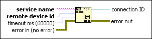

IrDA Open Connection Function
Owning Palette: IrDA Functions
Requires: Base Development System (Windows)
Opens an infrared connection to another IrDA-enabled device.
Close the connection with the IrDA Close Connection function.

 Add to the block diagram Add to the block diagram |
 Find on the palette Find on the palette |